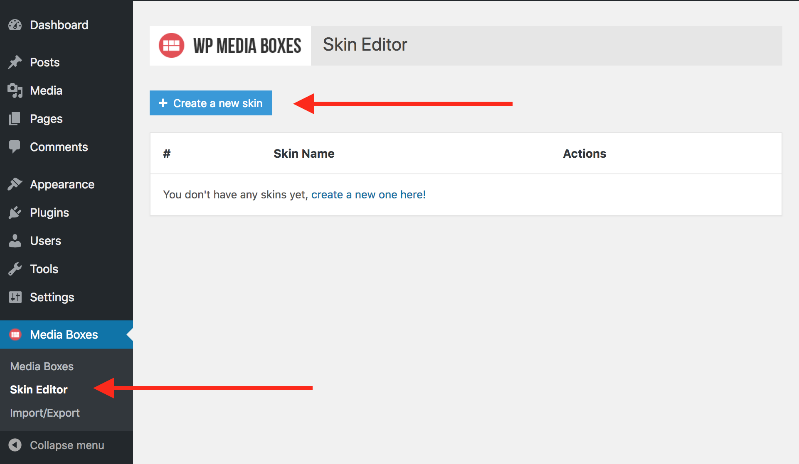
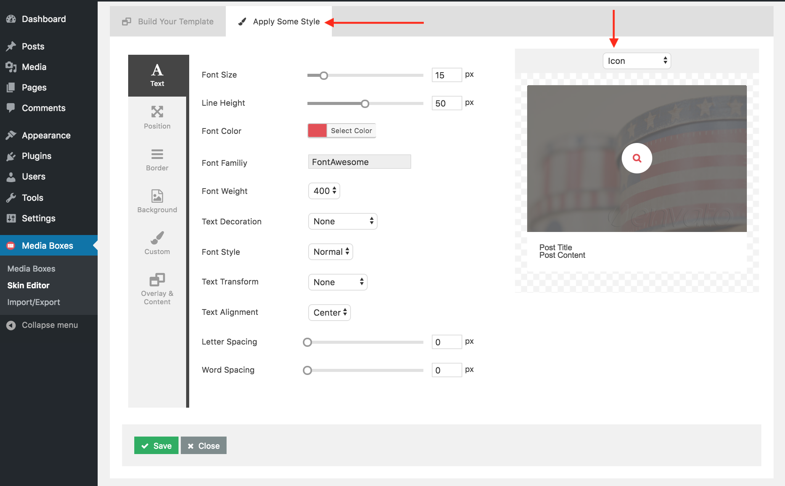

Here you will see how to create your first skin. You can import all the skins from the live preview and skip this section so you can start faster, just go to the
Import & Export section.
First Step:
Go to the Media Boxes admin panel, through the left dashboard menu and click
Skin Editor then click
Create a new skin

Second Step:
Enter a new name for your sking (this is for identification purpose in the admin panel).
Then you can drag items from the
AVAILABLE ITEMS and
EXTRA ITEMS sections into the
THUMBNAIL OVERLAY and
CONTENT sections.
Once you have items in the
THUMBNAIL OVERLAY and
CONTENT sections you'll notice few options you can play around with. For example:
- Pencil Icon: you can change the icon
- Link Icon: you can set that when the user clicks on that item it links to a different page or it opens the lightbox
- Trash Icon: you can remove the item from the section
Third Step:
Navigate to the
Apply Some Style part.
Here you can apply many different CSS styles to all the items selected in the previous step.
The item you are currently styling is in the top right corner in a dropdown menu (which you can change).

Final Step:
Don't forget to save it by clicking the green
Save button. If you click
Close or leave the page the changes will not be saved.